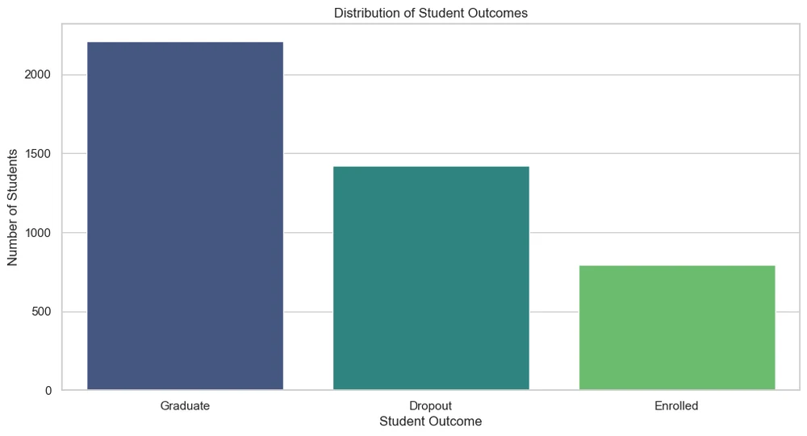
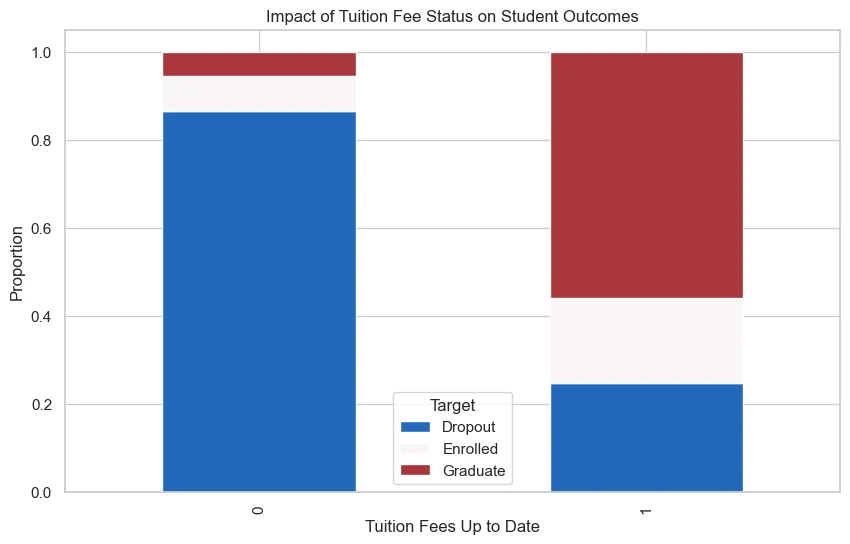
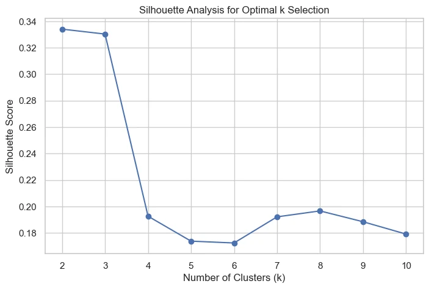
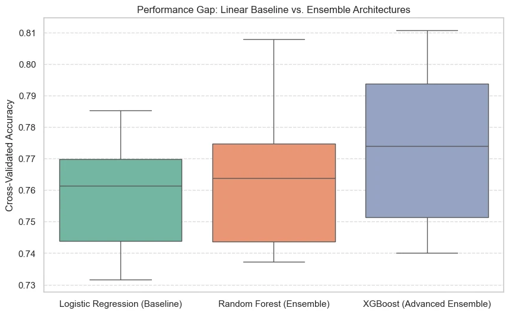
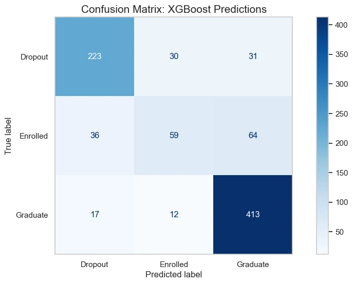
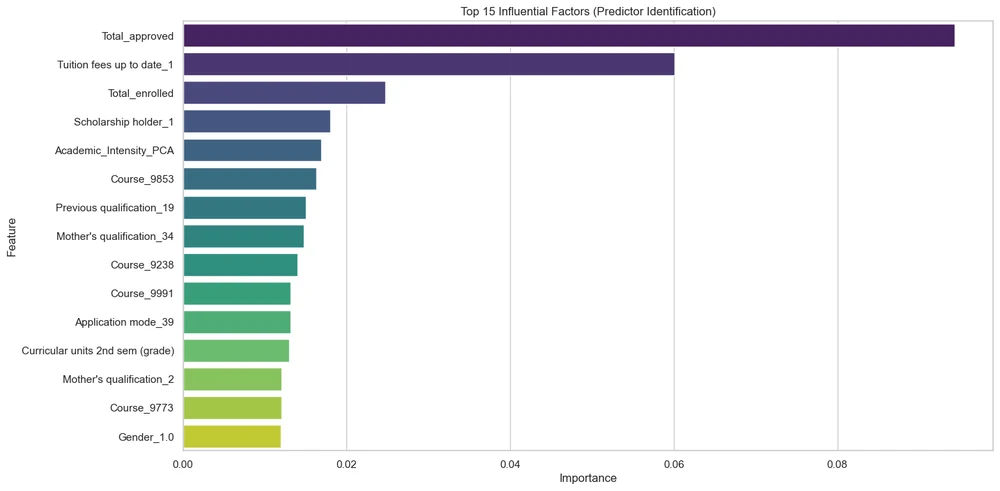

Home / Projects / Student retention
Predicting student dropout with a multi-model approach
- Records
- 4,42436 features, one higher-education institution
- Best model
- XGBoost78.5% test accuracy (885 held-out students)
- Dropout class
- 0.79 recall, 0.80 F1Enrolled class is weakest: 0.37 recall
In short. Which students are likely to drop out, and what separates them from those who graduate? Using 4,424 records, XGBoost finds about 79% of eventual dropouts among held-out students. The strongest signals are how many course units a student has passed and whether tuition is up to date. A model like this could help decide whom to contact early; this project did not test whether outreach would change outcomes.
01Question
Which factors are associated with student dropout, can students be grouped meaningfully for targeted retention programmes, and how well can dropout be predicted early enough to act on? The data is the public UCI "predict students' dropout and academic success" dataset, collected at a Portuguese higher-education institution; the three outcomes are Dropout, Enrolled and Graduate.

02Method
- Exploration and testing. Distribution and outlier checks, then chi-square tests for categorical variables and ANOVA for numeric ones, to find which variables relate to outcome rather than assuming it.
- Segmentation. KMeans produced three student personas, and PCA produced an "academic intensity" feature, both added as model inputs.
- Models. Logistic Regression as a baseline, Random Forest, and XGBoost (tree depth limited to 5 to restrain overfitting), compared with 10-fold cross-validation and then once on a held-out test set. The notebook also runs a paired t-test on the fold scores to compare the baseline with XGBoost.

Segmenting the students
KMeans grouped students into three personas, and PCA produced an "academic intensity" feature; both were added to the models as inputs. The silhouette score, which measures how cleanly clusters separate, peaks at two and three clusters at about 0.33 and falls sharply from four, so three clusters were used.

03Results
| Model | 10-fold CV accuracy | Test accuracy | Test weighted F1 |
|---|---|---|---|
| Logistic Regression (baseline) | 0.759 ± 0.018 | 0.774 | 0.758 |
| Random Forest | 0.763 ± 0.021 | 0.774 | 0.753 |
| XGBoost | 0.774 ± 0.025 | 0.785 | 0.771 |
XGBoost was best on every metric, but the margin over the linear baseline is about one percentage point of accuracy, and it is comparable to the fold-to-fold spread. On the hold-out set it finds 79% of eventual dropouts (F1 0.80) and 93% of graduates (F1 0.87). It struggles with students still enrolled (recall 0.37, F1 0.45), who sit between the other two groups.


What predicts dropout
The strongest predictors were the number of curricular units approved and whether tuition fees were up to date, followed by units enrolled and scholarship status: academic progress and financial stability.

04Limitations
- One institution's data; nothing here shows the model transfers to other universities or years.
- Because units approved is the top predictor, much of the signal arrives only after a student has already struggled. It supports intervention only where those features are available early.
- The report includes an ethical reflection on using predictions about individual students; any deployment would need that discussion first.
Code: notebook, script and data on GitHub. The written report is not published.
Reproducibility check: report versus re-run
| Measure | Report | Re-run |
|---|---|---|
| Baseline CV accuracy | 0.759 | 0.759 |
| Random Forest CV accuracy | 0.763 | 0.763 |
| XGBoost CV accuracy | 0.774 | 0.774 |
| XGBoost test accuracy | 0.785 | 0.780 |
| Dropout recall | 0.79 | 0.79 |
| Enrolled recall | 0.37 | 0.33 |
Why show this. Re-running the published notebook today reproduces the baseline and Random Forest exactly, and XGBoost to within about half a percentage point. The small gap is expected across XGBoost versions and is within the cross-validation spread, so the conclusions hold.